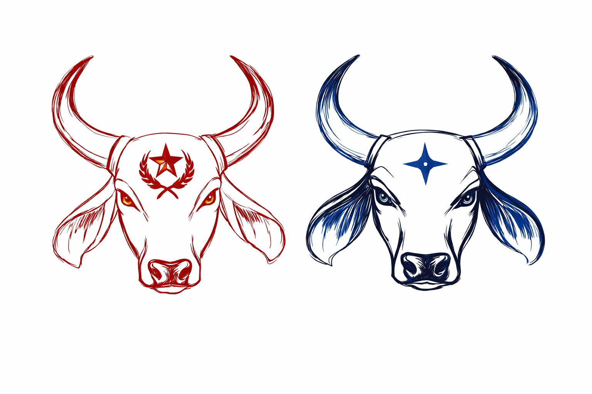
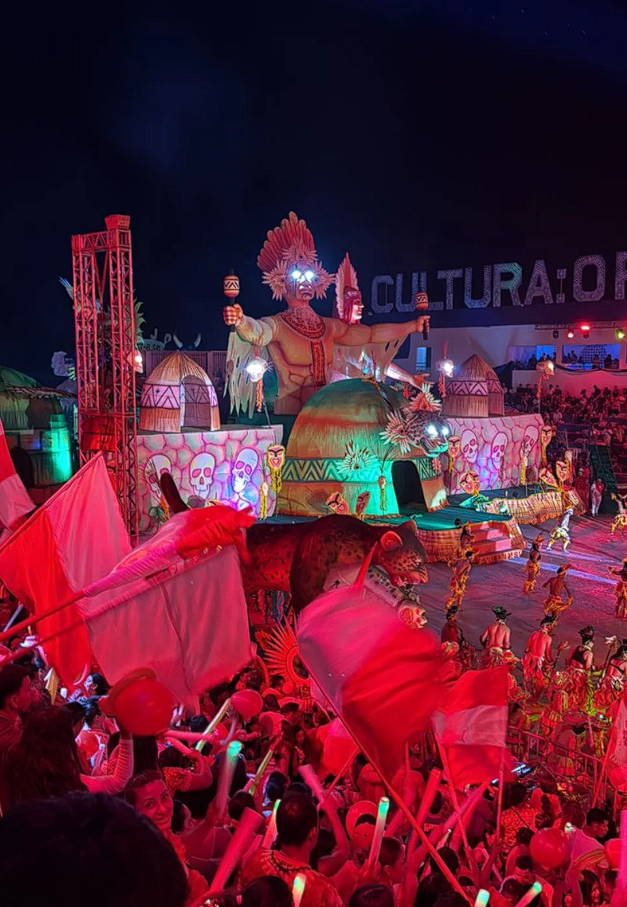
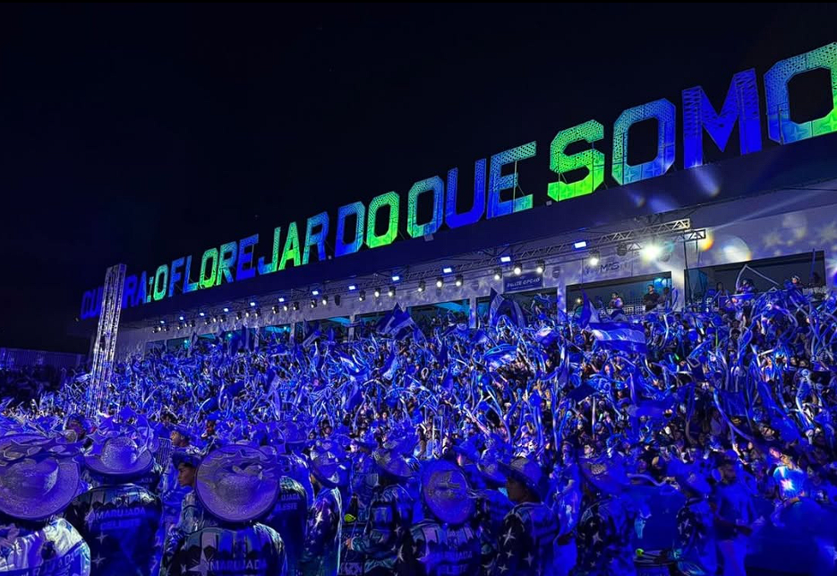

Cultura viva
O festival fortalece a cultura local e mantém viva a tradição dos bois dentro da história de Fonte Boa.

Festival de Fonte BoaCultura e tradição
Uma celebração da identidade, da emoção popular e da força cultural dos bois-bumbás em Fonte Boa.
O Festival de Fonte Boa é uma expressão da cultura popular amazonense, reunindo arte, emoção, música, torcida e tradição em torno dos bois-bumbás.
Mais do que uma disputa, o festival é um momento de encontro da comunidade, de valorização da identidade local e de celebração da criatividade do povo.


O festival fortalece a cultura local e mantém viva a tradição dos bois dentro da história de Fonte Boa.
Tira-Prosa e Corajoso mobilizam suas torcidas com orgulho, emoção e forte presença popular.
O festival carrega elementos da região, da floresta, da arte e do sentimento cultural do Amazonas.
Este site foi criado para aproximar ainda mais a comunidade do Festival de Fonte Boa, valorizando os bois, fortalecendo as torcidas e oferecendo um espaço moderno para acompanhar o ranking e participar dessa grande celebração.
Fazer parte da torcida